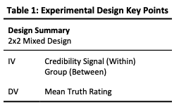
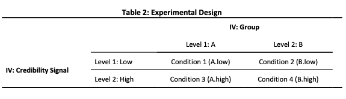
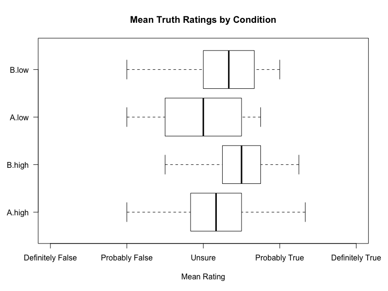
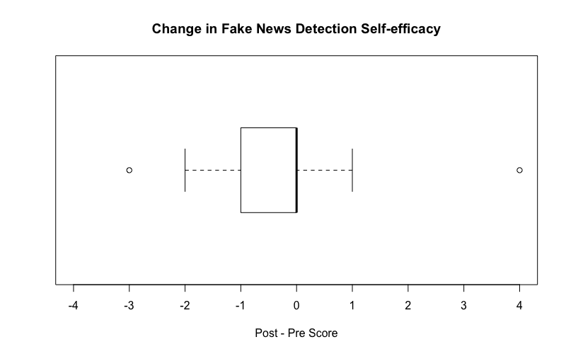

Case Study: Fake News
Introduction
University assessment to undertake a research project in a group. I was assigned to a group of 4 and we were given the topic to research of Fake News.
Tags
Process
For this case study, the project shall be viewed as a sequence of 4 stages: literature review; experiment; results; and discussion. Each stage shall be discussed in turn.
Literature Review
Introduction
First, the existing literature was carefuly reviewed. This involved: trawling the recent proceedings of reputable conferences; searching key terms; and following up the references of relevent publications. In the exisiting literature, the review aimed to identify:
- the research questions considered
- the methods used
- the results found
The goal was to find a gap in the exisiting research with motivation to research it. Additionally, an understanding of previously used methods would inform the design of this study's method.
A current, open and interesting research area identified was: the design and use of tools to help users spot Fake News.
Motivation & Background
The literature review defined Fake News to be disinformation (intentionally false or misleading information) in the form of news. Fake News is considered harmful and people are highly susceptible to it due to multiple cognitive biases, thus, motivating the study of tools to help people spot it.
Gap
Existing work found that:
- People are bad at spotting Fake News
- People think they are good at detecting Fake News
- People were sceptical of tools to help them detect Fake News
Existing work had not identified if given tools to help them detect Fake News people would use them. This project attempts to fill some of this gap.
Context
The literature discussed how news consumption is changing with social media, eg. Facebook and Twitter, becoming an increasingly way to consume news content. Concequently, news consumption through social media was deemed an appropriate setting to research.
Resulting Research Questions
The literature review provided motivation to research the question: do credibility signals in social media news feeds affect users' perceptions of the truth of news?
Credibility signals are one form of tool for helping users spot Fake News. They are present an estimated level of credibility such as low or high. They are a compromise between simpler tools like flags and more complex visualisations.
A second research question was identified of: does the task of detecting Fake News affect peoples' perceptions of how good they are at it?
Experiment
To investigate the research questions:
- Do credibility signals in social media news feeds affect users' perceptions of the truth of news?
- Does the task of detecting Fake News affect peoples' perceptions of how good they are at it?
a mixed methods study was designed.
Rating Exercise
The primary method was a rating exercise. Participants were presented with a sequence of news articles and asked to rate how true they belived it to be. The articles were designed to appear similarly to how they would be presented in a newsfeed. The truth ratings were captured ussing a A 5-point Likert item with the values:values: ‘definitely false’; ‘probably false’; ‘unsure’; ‘probably true’; and ‘definitely true’.
Example Articles
Every article was presented with a crediblity signal of either low or high value. The levels of the credibility signal formed one independent variable of the study. Effects of showing certain articles with certain signals were counter-balanced by partitioning the participant into two groups such that for each article, the groups were presented it with different signals. The group partition formed the second independent variable of the study.
This resulted in a 2x2 mixed design, thus, four conditions as summarised by Tables 1 & 2.
 Questionnaires
The rating exercise was complemented by pre- and post-questtionnaires. The questionnaires had a few different purposes. First they were used to collect sociodemographic information to enable an understanding of who participated in the study which is important for evaluating the studies validity. Second, it gathered information relating to potential confounds including: the social media the participants used and their familiarity with the articles presented in the rating exercise; again this is important for assessing the studies validity. The post-questionnaire explored why particpants gave the truth ratings they did as well as how influenced they felt by the signals and how believable they thought the signals were. This information was gathered as it had the potential to help us explain the results we collected. Finally, in both the pre- and post-questionnaire participants were asked how good they thought they were at detecting Fake News. This was asked, repeatedly, to identify if the rating exercise decreases self-efficacy.
Hypothesis
We believed that participants would be affected by the signals and hypothesised that: high credibility signals in social media news feeds will lead users to perceive the article as being more truthful.
The existing literature reported people to percieve themselves as being good at detecting Fake News but bad in reality. We suspected that the task of detecting Fake News may serve as a reality check, thus, hypothesised that: the task of rating how true news articles are will decrease peoples self efficacy at Fake News detection.
Running the study
The study was implemented using Qualtrics. First we piloted the study with a small number of participants to identify problems with the study and to modify it as necessary. The pilot indicated the study was longer than targeted so modifications were made to shorten it. 60 student participants were recruited by approaching them in communal areas of the university such as the library.
At the start of every session with a participant they were briefed about the study and it was explained how their data would be used such that they could give informed consent. They were able to withdraw, without giving reason, during the experiment. At the end of the study they were debriefed and able to ask any questions.
Results
The experiment collected a large amount of data. The collected data could be downloaded from Qualtrics as a large spreadsheet. Using Python, largely the Pandas library, I processed the data to produce a set of data files containing the data required for each part of the analysis in appropriate forms.
Using R, a team mate and I, explored each of the data sets using descriptive statistics and data visualisation. We used approapriate statistical tests to test our hypothesis.
Hypothesis 1
The first hypothesis was: high credibility signals in social media news feeds will lead users to perceive the article as being more truthful. To test this hypothesis we wanted to compare the mean truth ratings of articles with low crediblity and articles with high crediblity. If the hypothesis is correct we would hope to to see a difference in location i.e. we would expect the mean of the high credibility level to be greater than the mean of the low credibility level.
Given the 2x2 mixed design of the experiment, the appropriate statistical test was a 2x2 mixed ANOVA. This tested for three things. This ombnibus test examines 3 possible effects.
The first effect is a main effect for the Credibility Signal IV. This is the effect changing the level of the Credibility Signal has on the Mean Truth Rating DV. The hypothesis predicts an effect for the Credibility Signal, however, the ANOVA showed there was not a statistically significant one. F(1,56)=2.726, p=.104, η2=.046. This can be seen visually from the boxplot above - the high signal conditions (A.high & B.high) were not rated notably more true then the low signal conditions (A.low & B.low).
The second effect is a main effect for the Group IV. This is the effect of changing the Group IV on the Truth Rating DV. No effect is expected here. Surprisingly, the ANOVA reported a significant large effect. F(1,56)=8.520, p=.005, partial η2=.132 This indicates that Group B thought the articles were more likely true than Group A.
The final effect was the interaction effect. This effect that the combination of the Credibility Signal IV and the Group IV has on the DV. We expect the IVs to be independent, hence, we do not expect there to be an effect. As expected, the ANOVA did not find a significant interaction effect. F(1,56)=0.041, p=.839, η2=.001
In summary
Hypothesis 2
Hypothesis 2 was: the task of rating how true news articles are will decrease peoples self-efficacy at Fake News detection
Repeat measures of people self-efficacy at Fake News detection. The first measure was before the rating exercise and the second after. A 5-point Likert item was used with the values: very bad, bad, average, good and very good. The change if self-efficacy was computed by deducting the first measure from the second per participant.
The boxplot below visually describes the set of self-efficacy changes recorded. It is clearly skewed to negative values showing a decrease in self-efficacy.
To test the hypothesis formally, a Wilcoxon signed-rank test was used. The test reported T(30) = 55, p<.001. This means that there was a statistically significant change in self-efficacy which supports the hypothesis.